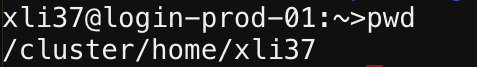

Run AlphaFold2 on Tufts HPC with Open OnDemand App#
This tutorial will guide the user through the process of running AlphaFold2 on Tufts High Performance Computing (HPC) system using Open Ondemand app, a graphical interface to the HPC.
Prerequisites#
Access to Tufts HPC: If you don’t already have an account, you can apply for a HPC account by submitting this form.
Navigate To The Cluster and prepare the input file#
Navigate to: https://ondemand.pax.tufts.edu/
Log in with your Tufts credentials
On the top menu bar choose
Clusters->Tufts HPC Shell AccessType
pwdto check your current directory. You should be at your home directory, which is listed as/cluster/home/your_utln/Type
lsto list the files in your current directory.Copy the example folder and data to your home directory by following command
cp -r /cluster/tufts/bio/tools/training/cas12a_af2_sp24/ ./
Type
lsto list the files in your current directory after copying the files, you can now see thecas12a_af2_sp24/folder.

Prepare your input data#
Input data for AlphaFold2 typically includes the amino acid sequences of the proteins you wish to model.
Your input data should be located here: /cluster/home/your_utln/cas12a_af2_sp24/5XUS_mut2cwf_modified.fasta
Remember to replace your_utln with your own tufts credential
Run AlphaFold2#
Navigate to: https://ondemand.pax.tufts.edu/#
Log in with your Tufts credentials
On the top menu bar choose
Bioinformatics Apps->AlphaFold

Enter the following parameters to run the job.#
Number of hours: 24Number of cores: 8Amount of memory: 32GBSelect preempt or normal gpu partition: gpuSelect the GPU type: a100Software Version: 2.3.2Database: 20231031Working Directory: /cluster/home/your_utln/cas12a_af2_sp24/Output directory Name: /cluster/home/your_utln/cas12a_af2_sp24/fasta_paths: /cluster/home/your_utln/cas12a_af2_sp24/5XUS_mut2cwf_modified.fastamodel_preset: multimermodels_to_relax: bestnum_multimer_predictions_per_model: 1max_template_date: 2020-01-01Then, hitlaunch
Check output files#
To check the output files, go back to the main page of Open Ondemand, on the top menu bar choose Files -> Home Directory
Click cas12a_af2_sp24, then click 5XUS_mut2cwf_modified, you will see the output. Given that this task requires a few hours to complete, proceed to the 5XUS_mut2cwf_modified_prerun folder. This location contains the pre-executed results of AlphaFold2 along with the stored output files.
Here’s the explanation of the file categories listed:
JSON Files (confidence_model & pae_model): Predictive data files from different models, indicating confidence levels and pairwise alignment errors.
Pickle File (features.pkl): Serialized file containing features used for model prediction. Directory (msas): A folder containing multiple sequence alignments related to the analysis.
CIF & PDB Files (_ranked_, relaxed_model_, unrelaxed_model__): Structural data files in two formats, showing the ranked and modelled protein structures, both relaxed and unrelaxed.
JSON Files (ranking_debug.json, relax_metrics.json, timings.json): Debugging, metrics, and timing information for the analysis process.
Pickle Files (_result_model__): Serialized files containing comprehensive results from each model prediction.
ranked_0.pdb is your best predicted structure.
This file contains the highest-ranked prediction based on the analysis, indicating it is considered the most accurate or reliable structure prediction from the set of models used. You should be able to download this file with the download button.
AlphaFold2 Accuracy Assessment#
[!NOTE]
To continue with this section, you will need to know some linux basics. More information can be found here.
We can assess the accuracy of the AlphaFold prediction using:
Predicted Local Distance Difference Test (pLDDT)
Predicted Alignment Error
Predicted Local Distance Difference Test (pLDDT)#
per-residue confidence metric ranging from 0-100 (100 being the highest confidence)
Regions below 50 could indicate disordered regions

Predicted Alignment Error (PAE)#
The Predicted Alignment Error (PAE) gives us an expected distance error based on each residue.
If we are more confident that the distance between two residues is accurate, then the PAE is lower (darker green). If we are less confident that the distance between two residues is accurate, the PAE is higher (lighter green)

Starting an Interactive Session#
To run our analyses we will need to move from the login node to a compute node. We can do this by entering:
srun -p batch --time=3:00:00 -n 2 --mem=4g --pty bash
Explanation of Commands
- `srun`: SLURM command to run a parallel job
- `-p`: asking for a partition, here we are requesting the batch partition
- `--time`: time we need here we request 3 hours
- `-n`: number of CPUs needed here we requested 2
- `--mem`: memory we need here we request 4 Gigabytes
- `--reservation`: the reservation of compute resources to use here we use the `chbe165` reservation
- `--pty`: get a pseudo bash terminal
When you get a compute node you’ll note that your prompt will no longer say login and instead say the name of the node:
[tutln01@c1cmp048 ~]$
Set Up For Analysis#
Navigate to the folder that we just ran alphafold with:
Remember to replaceyour_utlnwith your own utln!!!
cd /cluster/home/your_utln/cas12a_af2_sp24
Given that AlphaFold2 can take anywhere from a few hours to a few days to run - AlphaFold2 predictions have already been generated for the Cas12a-CWF mutants from our study. We will use a script from the VIB Bioinformatics Core to visualize the accuracy of AlphaFold2’s predictions. First we will need to load the software needed to run that script:
[!WARNING] Do not change the module version. Stick with
alphafold/2.1.1.
module load alphafold/2.1.1
Run the python script#
Now we will need to feed our script three arguments:
--input_dirinput directory with model files--output_diroutput directory to put our plots of model information--nameoptional prefix to add to our file names
[!NOTE] Before you run the script, make sure you are at
/cluster/home/your_utln/cas12a_af2_sp24
python script/af2_accuracy_viz.py --input_dir ./5XUS_mut2cwf_modified_prerun --output_dir ./ --name mut2cwf_modified
Check the output files#
Running this will generate two img in your current directory:
mut2cwf_modified_coverage_LDDT.png- plots of your msa coverage and pLDDT scores per residue per modelmut2cwf_modified_PAE.png- plots of your predicted alignment error
The following are the pLDDT and PAE scores for the Cas12a-CWF mutant:
mut2cwf_modified_coverage_LDDT.png
The left-side heat map showcases the Multiple Sequence Alignment (MSA), with each sequence aligned against the input sequences. The color scale reflects the identity score, arranging sequences from top (highest identity) to bottom (lowest identity). Uncovered areas appear white, indicative of subsequences in the database that do not fully align. A black line delineates the extent of sequence coverage relative to the total number of sequences aligned. The right-side plot displays the predicted LDDT per residue position.mut2cwf_modified_PAE.png
The PAE (Pairwise Absolute Error) plot visually represents the absolute error in the relative positioning of residues, measured in Ångströms, through pairwise comparison. Utilizing a color gradient from blue to red, dark blue indicates an error of 0 Å, while larger errors shift towards dark red. Typically, along the heat map’s diagonal, values are anticipated to be near 0 Å, signifying minimal error. An optimal model is characterized by a predominantly dark blue heat map, denoting very low error across all comparisons.
[!NOTE] If you encounter any issues or this doesn’t work as expected, please feel free to reach out to Shirley Li, xue.li37@tufts.edu